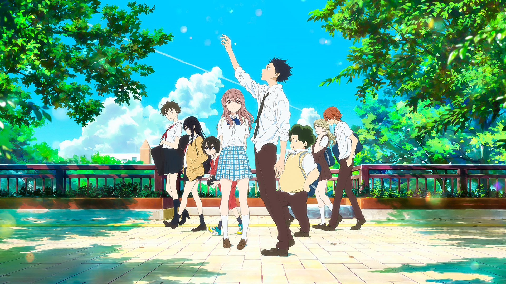
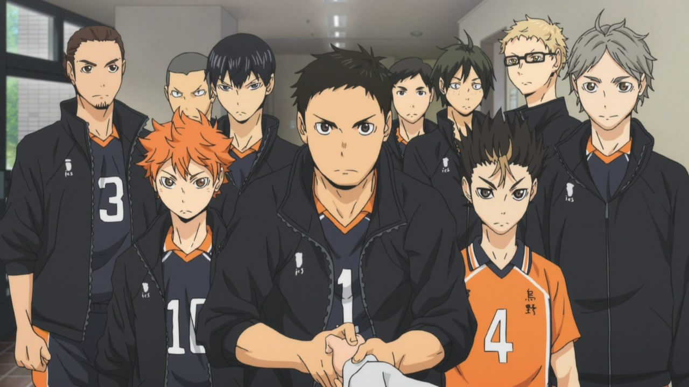
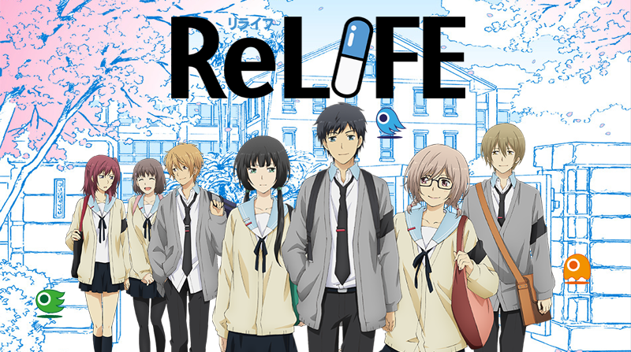

Anime reviews by alphabetical order:
5cm Per Second (2007)
A Silent Voice (2016)

Haikyuu!! (2014 - Ongoing)

Hajime no Ippo (2000-2014)
I Want to Eat Your Pancreas (2017)
K-ON! (2009-2010)
ReLIFE (2016)

Your Lie In April (2014-2015)

Genre: Romance, Slice of Life
5cm Per Second is most definitely a 10/10 rating. The movie is named 5 Centimeters Per
Second for the speed at which cherry blossom petals fall, petals being a metaphorical
representation of humans, reminiscent of the slowness of life and how people often start
together but slowly drift into their separate ways. It is a story centered around the lives of a
boy named Takaki and a girl named Akari. Up to Elementary school, these two got along well
and promised to be together forever, as they were the best of friends. However, by middle
school, Akari switches schools. Being young and naive, the two believe they will still be
together forever despite the distance between them. As they grow older, from middle school
age into adult hood, they grow further and further apart, life cirumstances and the world
itself seems to be against their love/ childhood promise of being together forever. They cope
with the loneliness and distance in entirely different ways.
Genre: Slice of Life, Tragedy, Romance
A Silent Voice, produced by Kyoto animations, recieves a 10/10 rating. Though the movie has
many characters, some we hate, others we love, the story centers around Ishida Shouya and
Nishimiya Shouko. Nishimiya Shouko is a deaf elementary student who found herself being
bullied by her classmates: mainly Ishida Shouya. Despite Nishimiya getting bullied by
everyone, she goes out of her way to always put on a smile and tries to befriend everyone
despite communication barriers: especially Ishida Shouya. When Nishimiya Shouko's parents
get in contact with teachers, the bullying is addressed. This is where the tables turn. Despite
everyone in the classroom bullying Nishimiya Shouko, everyone puts the blame on Ishida
Shouya. Ishida Shouya was beyond shocked to discover that the people whom he thought
were his friends, had suddenly turned on him, instead of them all taking the blame for
bullying Nishimiya Shouko. From that point forward Ishida Shouya was bullied by everyone
else except Nishimiya Shouko. But, Ishida Shouya continued to bully Nishimiya Shouko:
blaming her as the reason as to why he is now getting bullied by everyone. But one day
Nishimiya Shouko moved away without saying a word to anyone. By the time Ishida Shouya
is in high school he was no longer being bullied, but he was depressed, isolated from others,
and had social anxiety. One day in high school he notices that Nishimiya Shouko is
attending the same high school as him. Ishida Shouya sought to redeem himself in various
ways. This movie is a visual representation of the roller coaster we call, "coming of age". My
description does this movie no justice: it is a must watch!!!
Genre: Sports, Slice of Life, Drama, Action
Haikyuu!! Receives an 8/10 rating. This anime has 4 seasons with 90 episodes and it is still
ongoing. This anime centers around a group of young men who are on their high school's
volleyball team. Most of the anime you will see the everyday life of high school athletes. If
you were a high school athlete, you may find yourself taking a liking to this anime just as I
did: no matter what sport you played! Day in and out they are practicing and having to do
their best academically as well. Problems arise such as team members getting injured right
before a big game, team members not getting along, some team members do not make the
best life-choices, and many other "coming of age"/ athlete/ everyday high school student
problems. This anime receives an 8/10 rating because at times it will seem slow/boring. This
is because it is centering around high school students. Yes, most of it will be a fun watch
since it is a mixture of action and "coming of age" drama, but there are quieter times that are
not as interesting, such as the team members hanging out after school, doing chores, being
with family, and so on.

Genre: Sports, Action, Drama, Slice of Life
8/10 rating. Overall, ‘Hajime no Ippo’ is a well-rounded anime that has a combination of
some epic fight scenes that will get you all hyped up, heart-touching moments that will make
you sad for a while and most of all, a very motivating overarching plot that’ll make your heart
swell with joy. Makunouchi Ippo is an ordinary high school student in Japan. Since he spends
most of his time away from school helping his mother run the family business, he doesn't get
to enjoy his younger years like most teenagers. Always a target for bullying at school (the
family fishing business grants him a distinct odor), Ippo's life is one of hardship. One of these
after-school bullying sessions turns Ippo's life around for the better, as he is saved by a boxer
named Takamura. He decides to follow in Takamura's footsteps and train to become a boxer,
giving his life direction and purpose. Ippo's path to perfecting his pugilistic prowess is just
beginning.
Genre: Tragedy, Romance, Slice of Life
Do not let the title of this anime prevent you from watching it. It is a definite 10/10 rating.
This story follows two high school students who are polar opposites of one anoter. Haruki is a
young man who closes himself off from others and cares very little, if it all, for others. Haruki
prefers to bury his head in books rather than interact with others. Sakura is a young woman
who attends the same high school as him and she is the exact opposite: she is a ray of
sunshine around others and doesn't care for reading nearly as much as Haruki. Sakura is
dying due to some disease in her pancreas, and does not have long to live. Her entire family
treats her differently knowing that she is soon to die, so Sakura decides to not tell any of her
friends at school that she is soon going to die. Sakura does this knowing that her friends will
distance themselves just as her family did upon finding out that she is soon to die. Sakura
only has her diary to confide in: she just wants people to treat her normally as they used to
and not have to hide her pancrea disease from anyone. One day at school, Haruki saw that
Sakura accidentally left her diary behind, so Haruki decided to read a few pages of Sakura's
diary and discovered that she would soon die. Haruki didn't even believe it to be true. Sakura
told Haruki that she intended for him to read it and she was glad that Haruki didn't seem to
think that she was going to die soon. Sakura was glad that Haruki didn't seem to
think that she was soon to die because she wanted to spend her remaining time with
someone who would treat her as a normal person for the final days of her life. But as Sakura
spends time more time with Haruki, Haruki starts to care for her and his concern for her
health grows greater.

Genre: Musical, Slice of Life, Comedy, Drama
K-ON! is about 5 high school girls who become friends through the Light Music Club. Yui the
lead guitarist, Tsumugi the keyboardist, Mio the bassist, Azusa the rhythm guitarist, and Ritsu
the drummer. K-ON is the story of 5 aspiring musicians and their journey through high school
together. I give this anime an 7.6/10 rating. The music and soundtracks are great and there
are some very memorable, wholesome moments between these 5 friends.
Genre: Slice of Life, Sci-Fi, Comedy, Drama, Romance
9/10 rating. The story follows Kaizaki Arata, a 27-year-old jobless man, who fails at every job
interview he had after quitting his last company. His life changes after he met Yoake Ryou of
the ReLife Research Institute, who offered him a drug that can change his appearance to 17-
years-old and to become a subject in an experiment for one year. Thus, he begins his life as a
high school student once more.

Genre: Musical, Tragedy, Slice of Life, Romance, Comedy, Drama
A definite 10/10 rating. Having so many tagged genres, this anime really is a gem. Anyone
who likes/is familiar with classical music will LOVE this anime, because that's what it centers
around. And compared to all the other anime on this list, this anime most definitely has the
best animation and is the prettiest-looking of them all. This anime is about a piano prodigy
who lost his ability to play the piano after suffering a traumatic event in his childhood.
However, years later, he is forced back into the spotlight by an eccentric girl who plays the
violin. That eccentric girl has a very big secret of her own.